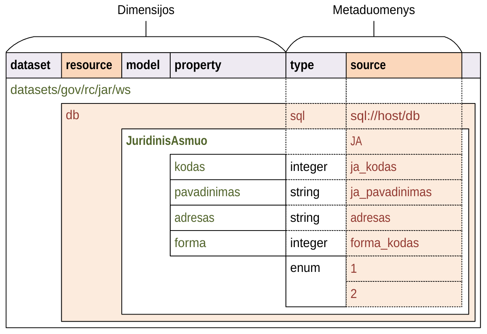

Lentelės formatas#
DSA yra sudarytas taip, kad būtų patogu dirbti tiek žmonėms, tiek programoms. Žmonės su DSA lentele gali dirbti naudojantis, bet kuria skaičiuoklės programa (Excel, LibreOffice Calc) ar kitas pasirinktas priemones. Kadangi DSA turi aiškią ir griežtą struktūrą, lentelėje pateiktus duomenis taip pat gali lengvai nuskaityti ir interpretuoti kompiuterinės programos.
Tais atvejais, kai su DSA lentele dirba žmonės, lentelė gali būti saugoma įstaigos pasirinktos skaičiuoklės programos ar kitų priemonių formatu.
Automatizuotoms priemonėms DSA turi būti teikiamas CSV formatu laikantis RFC 4180 taisyklių, failo koduotė turi būti UTF-8.
DSA lentelė gali būti importuojama į Duomenų katalogą, kuriame DSA lentelės turinys gali būti tvarkomas naudojantis grafine naudotojo sąsaja.
Rengiant duomenų struktūros aprašus darbas vyksta su viena lentele. Lentelės stuleliai sudaryti iš dimensijų ir metaduomenų.
Lentelė sudaryta hierarchiniu principu. Kiekvienas metaduomenų stulpelis gali
turėti skirtingą prasmę, priklausomai nuo dimensijos. Todėl toliau
dokumentacijoje konkrečios dimensijos stulpelis yra žymimas nurodant tiek
dimensijos, tiek metaduomenų pavadinimus, pavyzdžiui property.type,
kuris nurodo type metaduomenų stulpelį, esantį property
dimensijoje.
Dimensijos#
Duomenų struktūros aprašo lentelė sudaryta hierarchiniu principu. Kiekvienos lentelės eilutės prasmę apibrėžia Dimensijos stulpelis.
Kiekvienoje eilutėje gali būti užpildytas tik vienas dimensijos stulpelis.
Be šių penkių dimensijų, yra kelios papildomos dimensijos, jos nurodomos type stulpelyje, neužpildžius
nei vieno dimensijos stulpelio.
- dataset#
Duomenų rinkinys
Kodinis duomenų rinkinio pavadinimas. Naudojant duomenų rinkinio kodinį pavadinimą formuojamas API.
Duomenų rinkinio kodinis pavadinimas užrašomas pagal tokį šabloną:
datasets/forma/organizacija/katalogas/rinkinysVisi duomenų rinkinio pavadinimo komponenta užrašomi mažosiomis raidėmis, jei reikia žodžiai atskiriami
_simbolio pagalba.- forma
Nurodo organizacijos teisinę formą, galimi variantai:
gov - Viešasis sektorius.com - Privatusis sektorius.- organizacija
Organizacijos pavadinimo trumpinys. Viena organizacija gali turėti vieną trumpinį, kuris yra registruojamas duomenų kataloge.
- katalogas
Organizacijos informacinės sistemos trumpinys.
- rinkinys
Informacinės sistemos teikiamas duomenų rinkinys.
Visi pavadinimai užrašomi mažosiomis lotyniškomis raidėmis, žodžiams atskirti gali būti naudojamas
_simbolis.Pagal semantinę prasmę atitinka dcat:Resource.
Pavyzdys
datasets/gov/rc/jar/wsdatasets/gov/ivkp/adp/adkTaip pat žiūrėkite
- resource#
Duomenų šaltinis
Kodinis duomenų šaltinio pavadinimas, užrašomas mažosiomis lotyniškomis raidėmis, žodžiai skiriami
_simboliu.Duomenų šaltinis yra duomenų failas, duomenų bazė ar API, per kurį teikiami duomenys.
Pagal semantinę prasmę atitinka dcat:Distribution arba rml:logicalSource.
Pavyzdys
resource1db1Taip pat žiūrėkite
- base#
Modelio bazė
Nebepalaikoma nuo 0.2 versijos: Atskira modelio bazė naikinama. Nuo 0.2 versijos, modelio bazė nurodoma
model.typestulpelyje.Kodinis bazinio modelio pavadinimas. Atitinka rdfs:subClassOf prasmę (
modelrdfs:subClassOfbase). Žiūrėti base.
- model#
Modelis (lentelė)
Kodinis modelio pavadinimas, užrašomas lotyniškomis raidėmis, kiekvieno žodžio pirma raidė didžioji, kitos mažosios, žodžiai atskiriami didžiąja raide.
Pagal semantinę prasmę atitinka rdfs:Class arba r2rml:SubjectMap.
Pavyzdys
GyvenvieteAdministracijosTipas
- property#
Savybė (stulpelis)
Kodinis savybės pavadinimas, užrašomas mažosiomis lotyniškomis raidėmis, žodžiai atskiriami
_simoboliu.Savybių pavadinimai prasidedantys
_simboliu yra rezervuoti ir turi apibrėžtą prasmę.Savybės pavadinime gali būti naudojami tokie specialūs simboliai:
- .
(taško simbolis) nurodo objektų kompoziciją. Naudojamas su
refirobjectduomenų tipais.Pavyzdys
adresas.gatve- []
Duomenų masyvas arba sąrašas, gali būti naudojamas su visais tipais.
Pavyzdys
miestai[]
- @
Kalbos žymė, naudojama su
texttipu.Pavyzdys
pavadinimas@ltpavadinimas@en
Pagal semantinę prasmę atitinka rdfs:Property, r2rml:PredicateObjectMap.
Taip pat žiūrėkite
Metaduomenys#
Kaip ir minėta aukščiau, kiekvienos metaduomenų eilutės prasmė priklauso nuo
Dimensijos. Todėl, toliau dokumentacijoje, kalbant apie tam tikros
dimensijos stulpelį, stulpelis bus įvardinamas pridedant dimensijos
pavadinimą, pavyzdžiui model.ref, kas reikštų, kad kalbama apie
ref stulpelį, model dimensijoje.
- id#
Eilutės identifikatorius
Unikalus elemento numeris, gali būti sveikas, monotoniškai didėjantis skaičius arba UUID. Svarbu užtikrinti, kad visi elementai turėtu unikalų id.
Šis stulpelis pildomas automatinėmis priemonėmis, siekiant identifikuoti konkrečias metaduomenų eilutes, kad būtų galima atpažinti metaduomenis, kurie jau buvo pateikti ir po to atnaujinti.
Šio stulpelio pildyti nereikia.
- type#
Tipas
Prasmė priklauso nuo dimensijos.
Jei nenurodytas nei vienas dimensijos stulpelis, tuomet šiame stulpelyje nurodoma papildoma dimensija.
Taip pat žiūrėkite
- ref#
Ryšys
Prasmė priklauso nuo dimensijos.
Taip pat žiūrėkite
- source#
Šaltinis
Duomenų šaltinio struktūros elementai.
Taip pat žiūrėkite
- prepare#
Formulė
Formulė skirta duomenų atrankai, nuasmeninimui, transformavimui, tikrinimui ir pan.
Taip pat žiūrėkite
- level#
Brandos lygis
Duomenų brandos lygis, atitinka 5 Star Data.
Taip pat žiūrėkite
- access#
Prieiga
Duomenų prieigos lygis.
Taip pat žiūrėkite
- uri#
Žodyno atitikmuo
Sąsaja su išoriniu žodynu.
Taip pat žiūrėkite
- title#
Pavadinimas
Elemento pavadinimas.
Visi stulpeliai lentelėje yra neprivalomi. Stulpelių tvarka taip pat nėra
svarbi. Pavyzdžiui jei reikia apsirašyti tik globalių modelių struktūrą,
nebūtina įtraukti dataset, resource ir base stulpelių.
Jei norima apsirašyti tik prefiksus naudojamus uri lauke, užtenka
turėti tik prefiksų aprašymui reikalingus stulpelius.
Įrankiai skaitantys DSA, stulpelius, kurių nėra lentelėje turi interpretuoti juos kaip tuščius. Taip pat įrankiai neturėtų tikėtis, kad stulpeliai bus išdėstyti būtent tokia tvarka. Nors įrankių atžvilgiu stulpelių tvarka nėra svarbi, tačiau rekomenduotina išlaikyti vienodą stulpelių tvarką, tam kad lenteles būtų lengviau skaityti.